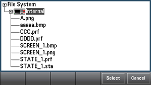
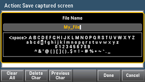

The Manage Files softkey allows you to create, copy, delete, and rename files and folders in the instrument's internal flash memory or on a USB drive attached to the front panel. It also allows you to capture the current screen to either a bitmap (*.bmp) or portable network graphics (*.png) file. This is the default option, as shown below.
Action specifies the action to perform. Pressing Capture Display saves a screen capture of the display at the moment that you pressed [Shift] to go to the [Utility] menu.
Delete - To delete a file or folder, press Delete and Browse to the folder or file to delete. Press Select > Perform Delete > Done.
Folder - To create a folder, Browse to the internal or external location for the folder, press File Name, enter a folder name and press Done. Press Create Folder > Done.
Copy - To copy a file or folder, press Copy. Browse to the folder or file to be copied and press Select. Press Copy Path and select an internal or external path for copying. Press Perform Copy > Done.
Rename - To rename a file or folder, press Rename. Browse to the folder or file to be renamed and press Select. Press New Name, enter a new name and press Done. Press Perform Rename > Done.
Browse selects the file or folder upon which the action will be performed.

Use the front panel arrows and [Select] key to navigate through the list, and press Select or Cancel to exit the browse window. The left and right arrows contract or expand a folder to hide or show its files.
File Name allows you to use the front panel arrows, the [Select] key, and the softkeys to enter a file name. Use the front panel arrows to point to a letter, and Previous Char and Next Char to move the cursor in the area where the name is entered. In the image below, there is no Next Char softkey because the cursor is at the end.

Press [Done] or [Cancel] to finish.